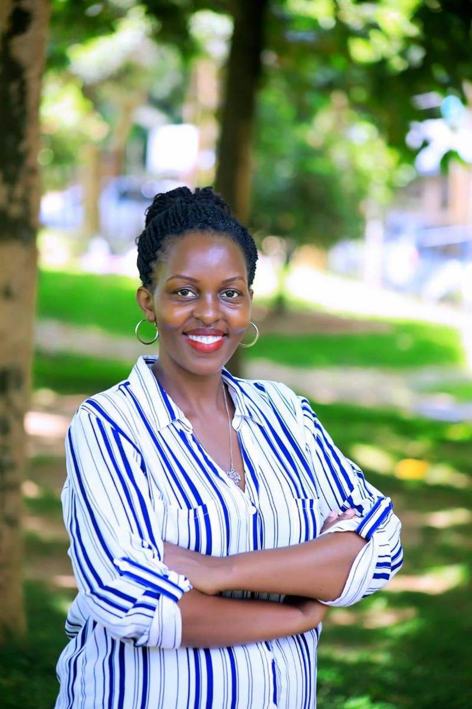

Our Story
We are more than an organisation — we are a community united by purpose, committed to helping families break the cycle of poverty and build sustainable futures.
Foundation
Families in Uganda, united by love, peace, and equity, flourishing socio-emotionally and economically, cultivating strong family bonds, and ensuring holistic well-being across generations.
To strengthen families in overcoming everyday socio-emotional and economic stress through ongoing educational training, dedicated mentorship, and comprehensive psychosocial support, fostering long-term family well-being and thriving communities.
Leadership

Director, Kwiki Education Services Limited
Kwiki Education Services is guided by one unwavering belief: education is the most powerful catalyst for lasting change.
Under Caroline's leadership, Kwiki has grown from a vision into a living, breathing community movement, one that walks alongside Uganda's most vulnerable families, equipping them not just with knowledge, but with the dignity, tools, and connections they need to truly thrive.
Kwiki is more than an organisation; it is a community united by purpose, committed to helping families break the cycle of poverty and build sustainable futures through mentorship, skills training, and sustained support.
Get in TouchOur Work in Pictures
Every image tells a story of hope, learning, and community.
Our Approach
We don't deliver programs to communities — we deliver programs within communities, meeting people where they are.
We are not a school. We bring programs directly into communities, homes, and institutions — meeting families where they live and work.
We address mental, emotional, social, and economic needs together — because lasting change requires more than one-dimensional solutions.
We engage teachers, church leaders, and community elders as partners — building an ecosystem of support around every family we serve.
The Challenge
Our fieldwork across Uganda reveals a cycle of hardship that demands urgent, compassionate, and sustained action.
Chronic stress and depression driven by unstable incomes from small-scale businesses — a cycle that affects the mental health of every family member.
Rising costs of living and deepening poverty make it increasingly difficult for families to meet even their most basic needs.
Parents under financial burden often experience anxiety, depression, and a sense of hopelessness that spills into family life — and directly impacts children's development.
Five Years of Service
Families Reached
Children Supported
Years of Operation
Volunteers
Join Us
Whether you donate, volunteer, or partner with us — you become hope for someone's tomorrow.